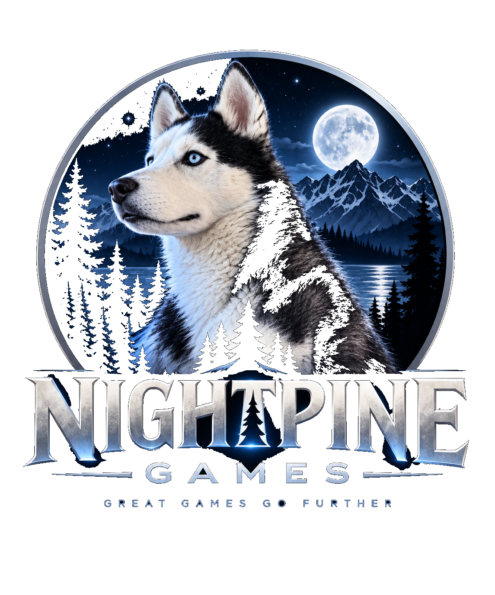
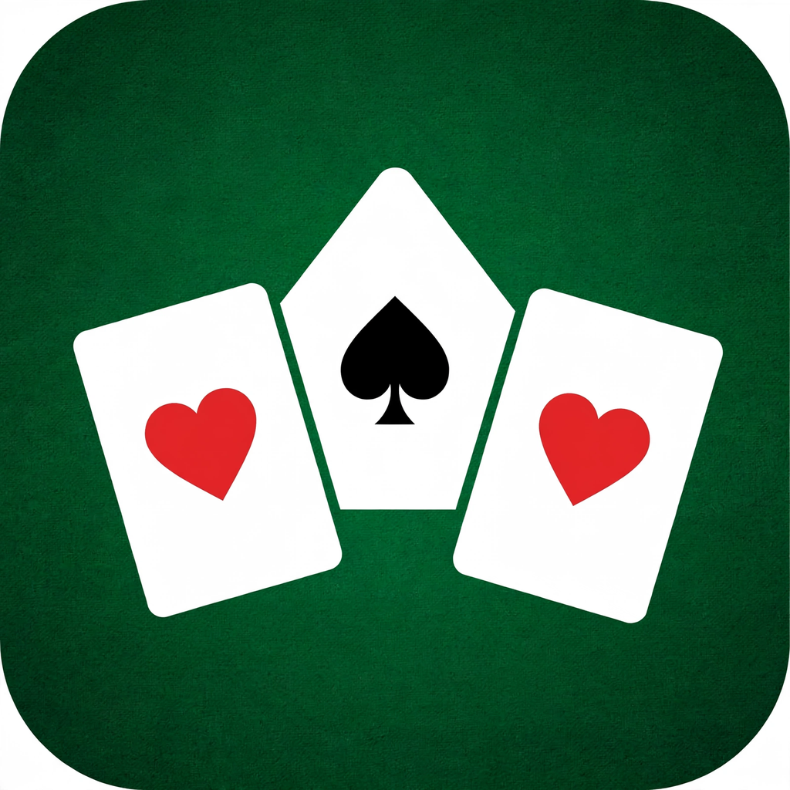

Great games go further.
Nightpine Games creates polished, approachable games with timeless mechanics, thoughtful progression, and the kind of details that make you want to play one more round.

Classic play. Built for today.
Our titles take familiar card-table favorites and give them a clean, modern home.
Spider Solitaire
A premium take on classic Spider Solitaire with 1-, 2-, and 4-suit play, Daily Challenges, achievements, player progression, customizable tables, and detailed statistics.

TriPeaks Solitaire
A premium take on classic TriPeaks Solitaire with score streaks, undo and hints, 4 felt styles, player levels, and detailed statistics.
Timeless gameplay
Familiar mechanics, refined presentation, and thoughtful features without getting in the way of the game.
Play your way
Clear controls, meaningful customization, and progression that rewards playing rather than interrupting it.
Made with care
Nightpine Games is building one focused, polished experience at a time.